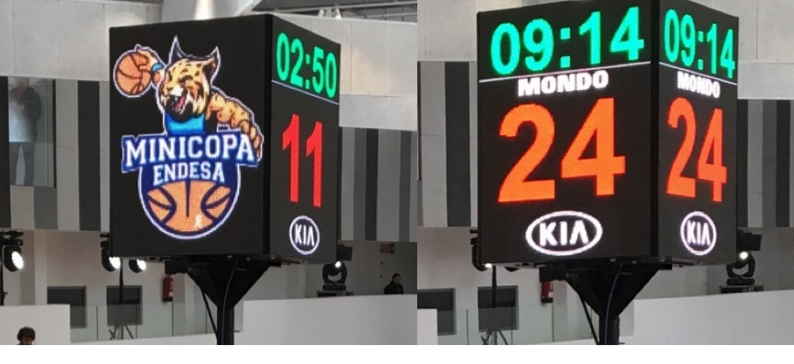

2.El tiempo de juego en la FIBA es de 40 minutos de juego real dividido en 2 partes de 20 minutoa

3.El periodo maximo de posesion es de 30 seg, lo cual relantiza un poco el juego

4. El tiempo que se tiene para sobrepasar el medio campo es 10 seg
5. La valoracion de los puntos es uniforme
6. El tiro libre vale 1 punto

7.Un tiro dentro del perimetro vale 2 puntos

8.Un tiro fuera del perimetro vale 3 puntos

9.El balon no se puede interceptar cuando el balon esta descendiendo hacia el aro

10.Una canasta se da por valida cuando el arbitro haya pitado

11.Una canasta y tiro libre solo se pitara cuando el jugador es golpeado en el aire camino hacia la canasta

12.Si el balon no entro se le dara 2 tiros libres al jugador que recibio la falta, si la falta se la hicieron dentro del perimetro, se le dara 3 tiros libres si el jugador fue afectado fuera del perimetro
13.A partir de la 7ma falta el equipo contrario tirara 2 tiros libres por cada falta personal que cometa el equipo
14.Si un jugador se encuentra dentro de la zona delimitada por el area de los tiros libres se cometera una infraccion llamada 3 segundos
15.Si un jugador retiene el balon mas de 5 segundos sin botar se cometera una infraccion llamada retencion

16.Si un jugador esta sacando de fondo y tarda mas de 5 segundos en sacar, el balon pasara al otro equipo
17.Si un jugador recibe el balon y levanta los 2 pies del suelo antes de botar se cometera una infraccion lamada pasos